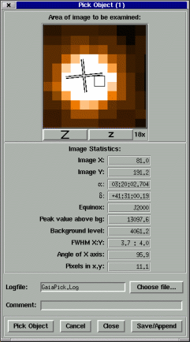
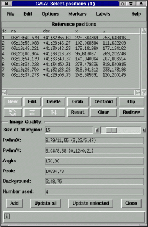

Object Statistics
There are two ways to get object statistics (that is positions and some idea of the shape and size).
Single Objects
For single objects use the "Pick Object..." toolbox that can be found in the "View" menu. This creates a new toolbox that allows you to pick an object. Various measurements of the object are then displayed, such as its centre and FWHM (these are all estimated from a two dimensional gaussian fit).
This toolbox also allows you to save the measurements, along with a one-line comment, to a plain text file. If the file already exists then the new measurements are appended to the file. The idea here is that you could be looking at several images and need to keep a updated record of the seeing variations.

Multiple objects
Mean properties of a list of objects can be obtained using the "Select Positions..." toolbox activated from the "Image-Analysis" menu.
This toolbox is really for identifiying the positions of many objects at once (say a set of observation targets). It provides a 2D gaussian description for a fit to all the objects (or a selected sub-set), as well as allowing the positions to be precessed to different celestail coordinates and be identified by different types of markers and labels.
Select positions toolbox usage hints 